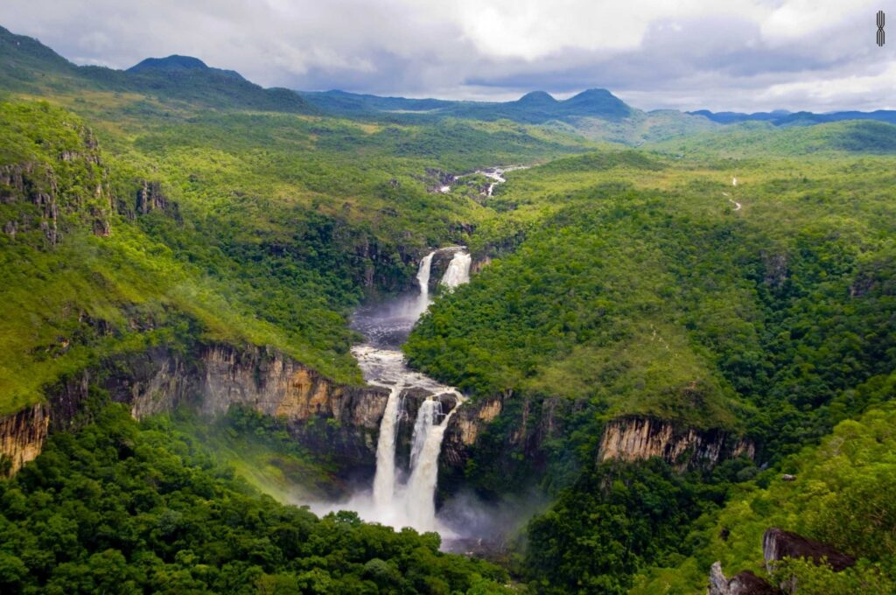

Prepara sua garrafinha d'água, seu tênis de trilha e vamos nos conectar com a natureza. Este destino é ideal para trilhas e escaladas quando as chuvas diminuem. A Chapada dos Veadeiros durante o outono é um espetáculo da natureza!
O outono é uma das melhores épocas para visitar a Chapada, já que o risco de chuvas fortes diminui, deixando as trilhas mais seguras e os rios menos caudalosos. As paisagens ficam exuberantes, com vegetação verde e cheia de vida, graças à água acumulada nos meses anteriores. É a época ideal para quem quer fazer trilhas mais longas, como as que levam até a Cachoeira dos Saltos ou o Vale da Lua, sem o calor intenso do verão.

Além das belezas naturais, o clima de tranquilidade toma conta do Parque Nacional da Chapada dos Veadeiros nessa época. O céu limpo à noite faz do outono um ótimo momento para observar as estrelas, algo que é mágico na região, conhecida por seu céu incrivelmente claro. Seja para quem busca aventura ou para quem quer relaxar e se conectar com a natureza, o outono na Chapada dos Veadeiros é uma experiência única e revigorante.
Não sabe o que pedir para saborear a gastronomia local? Visite esse site!